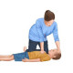

احیای اطفال
سرعت Chest Compression حدود ۱۰۰ تا ۱۲۰ در دقیقه و مقدار فشردگی قفسه سینه در شیرخوار و اطفال یک سوم قطر قدامی خلفی
و به ازای هر ۱۵ تا Chest Compression باید ۲ بار اکسیژن بدیم.
چک نبض در شیرخواران شریان براکیال و اطفال کاروتید
در صورتی که نیاز به شوک بود:
شوک اول: j/kg2 شوک دوم: j/kg4 شوک سوم j/kg10 (مشابه بزرگسالان)
دوز دارهای استفاده شده در حین CPR:
اپی نفرین:. mg/kg0.01
آمیودارون: mg/kg5
لیدوکائین: mg/kg1
آدنوزین: mg/kg0.1 & 0.2mg/kg
پروکائین آمید: mg/kg15
1️⃣ آنژین صدری
Aortic stenosis 2️⃣
3️⃣ آترواسکلروز شریان کرونری
Dilated cardiomyopathy 4️⃣
Hypertrophic cardiomyopathy 5️⃣
6️⃣ آنومالی ابشتین
Myocardial infarction 7️⃣
8️⃣ تترالوژی فالوت
Torsade de Pointes 9️⃣
🔟 Ventricular fibrillation
1️⃣1️⃣ سپسیس
1️⃣2️⃣ اختلال الکترولیتی
1️⃣3️⃣ مسمومیت و دارو ها